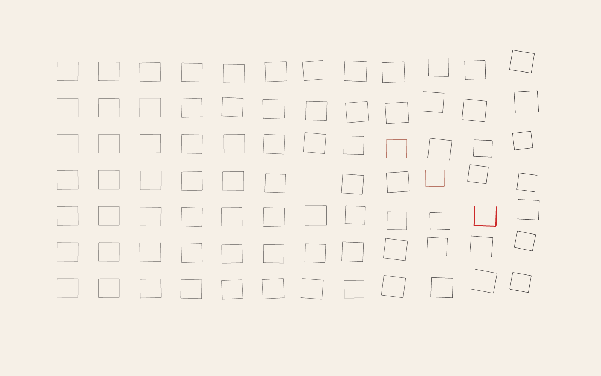
01
Controlled disorder grid
Molnár/Nees study: measured alignment gradually yields to bounded displacement, rotation, and omission.
Neutral algorithmic compositions using the OpenTaint landing palette. These are studies of visual systems, not illustrations for specific posts. Randomness shapes the geometry; there is no paper grain or decorative noise. Select an image to inspect the full-size PNG.

Molnár/Nees study: measured alignment gradually yields to bounded displacement, rotation, and omission.
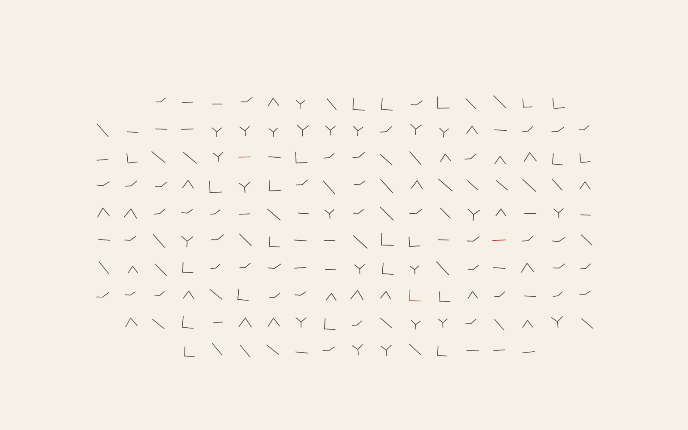
Nake study: a finite alphabet of signs follows a seeded transition process across a soft field.
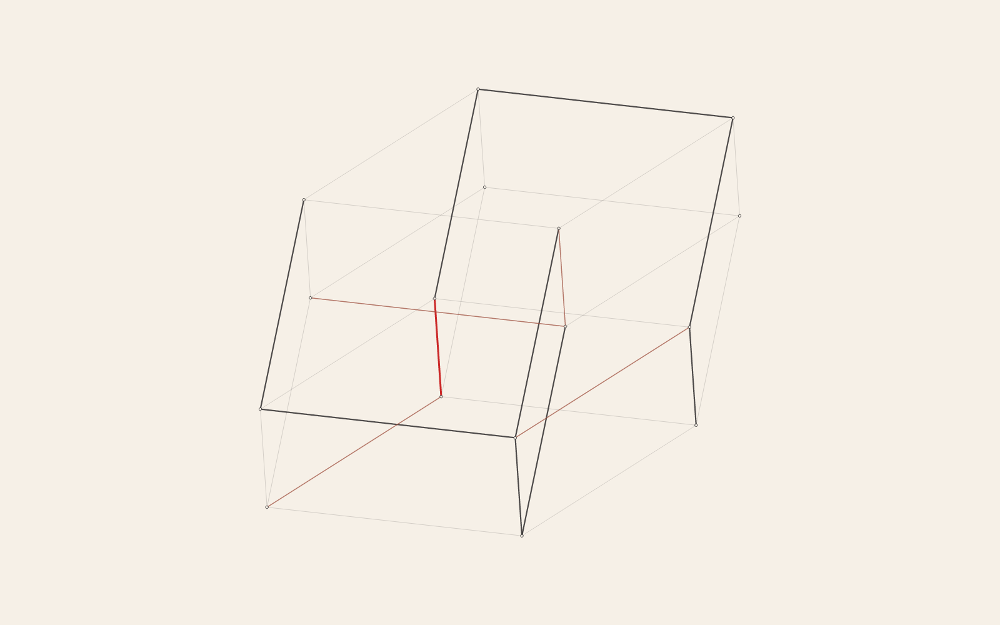
Mohr study: a projected edge system reveals selected and complementary subsets of a larger structure.
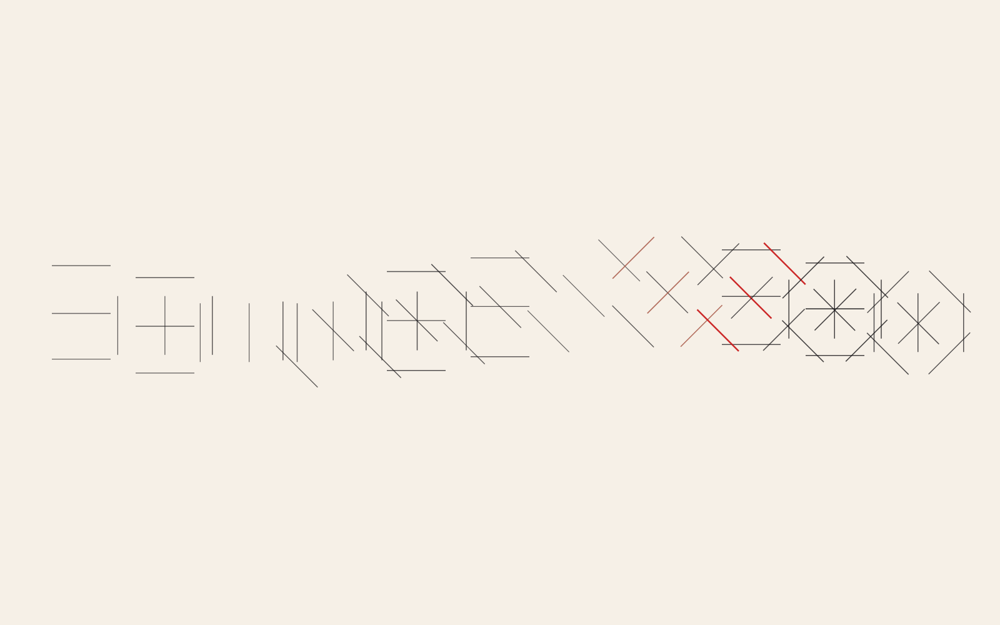
LeWitt study: a short directional instruction unfolds as a serial field of bounded combinations.
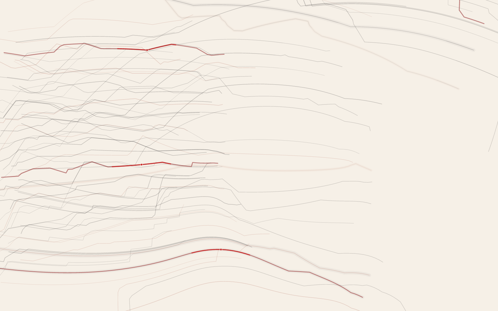
Spaced streams negotiating one coherent vector field through collision and deflection.
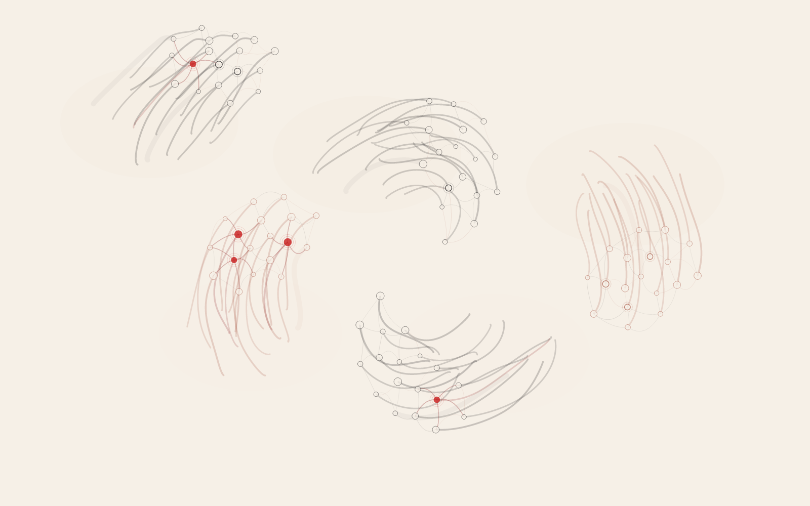
Local separation and attraction forming a mutable mesh of trails and nodes.
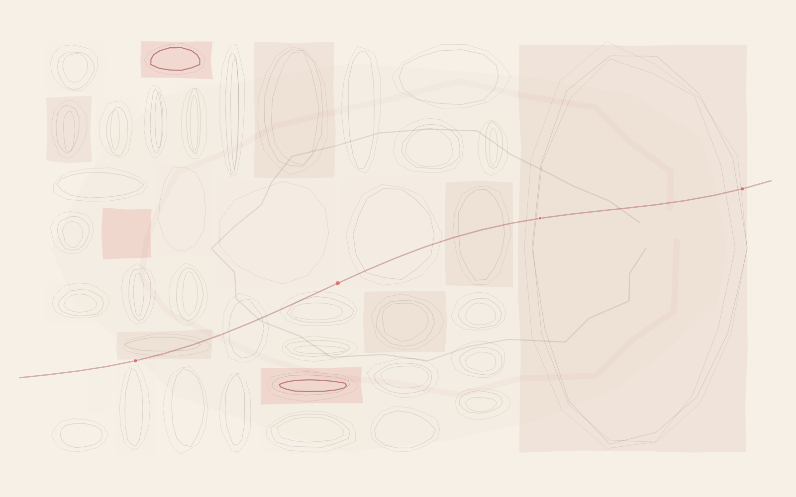
Recursive cells and nested contours forming a quiet, precisely structured composition.
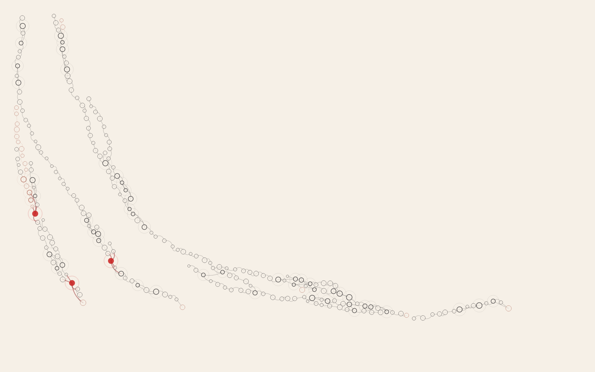
Branching tips and sparse cross-links growing a deterministic field of nodes.
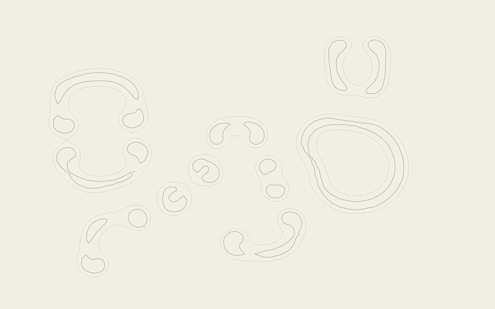
Layered reaction–diffusion contours with cellular strata and restrained vermilion marks.
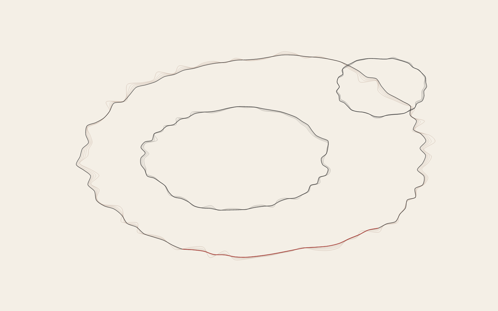
Repelling spring-linked contours recorded as nested growth histories.
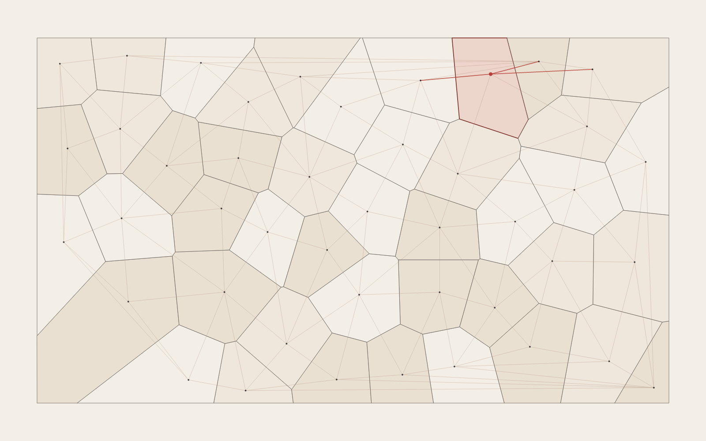
Clipped Voronoi cells overlaid with a deterministic Delaunay network.
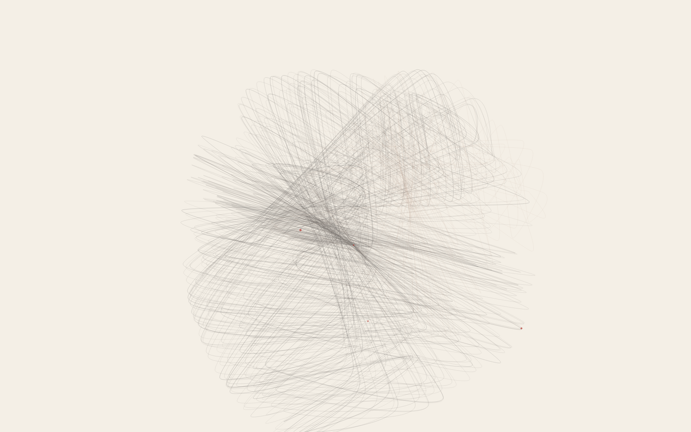
A Clifford attractor translated into accumulated filament and density marks.